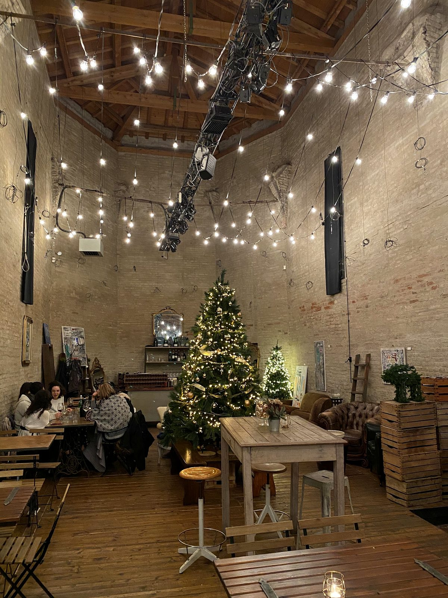
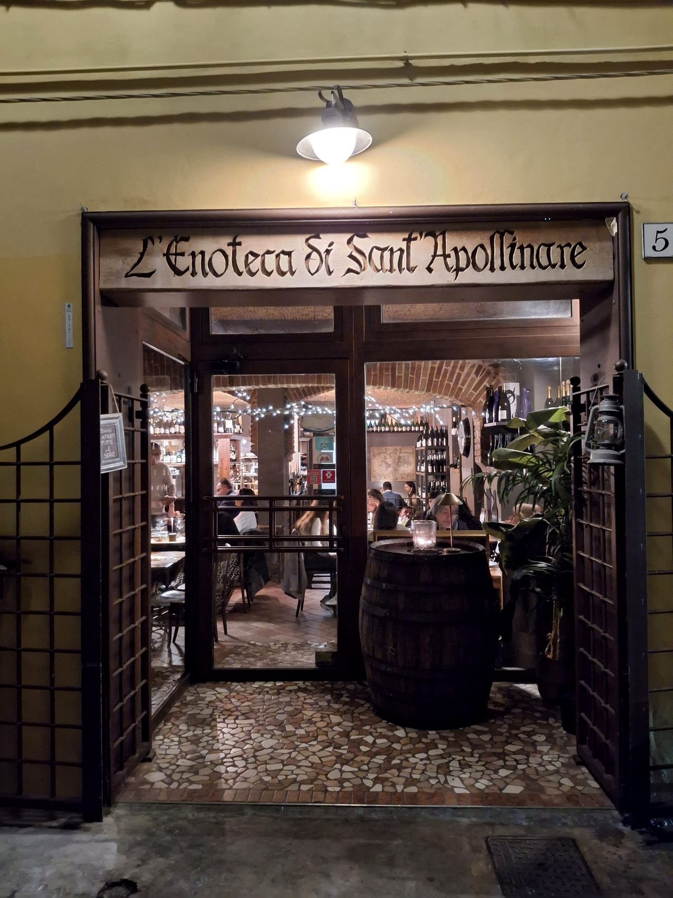
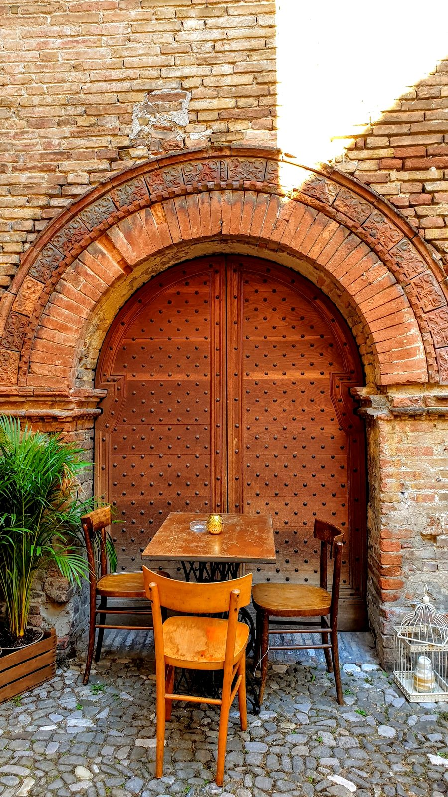
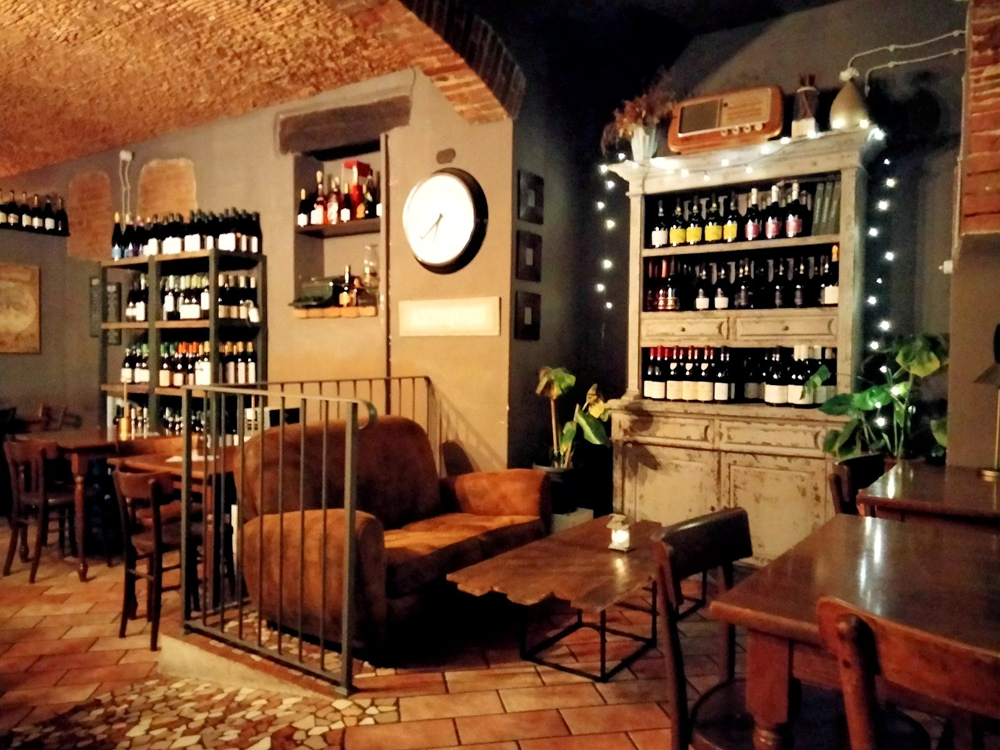
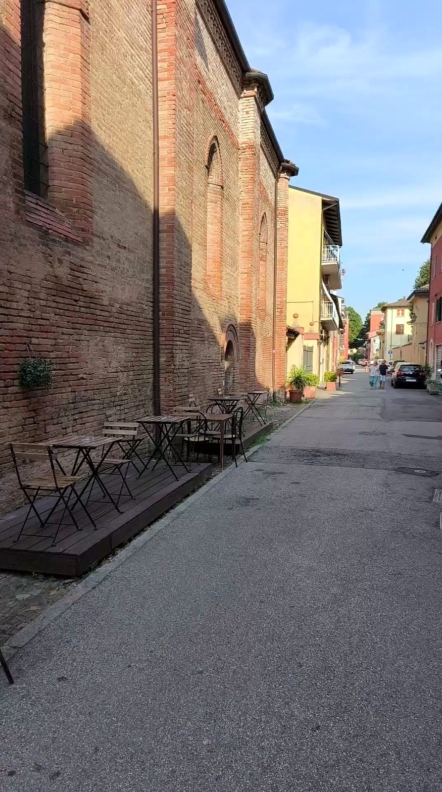
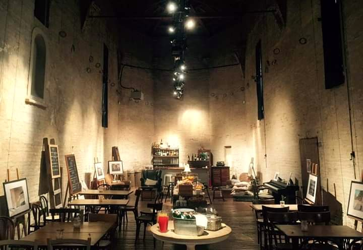
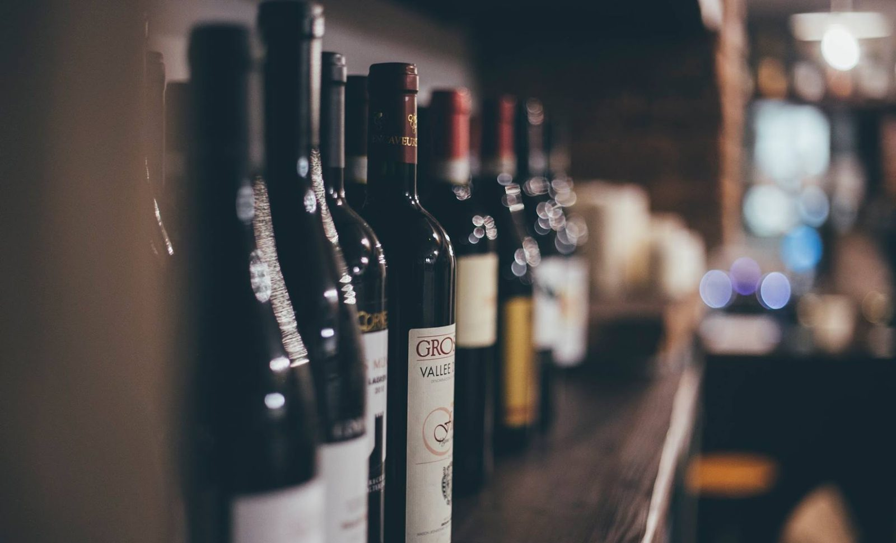
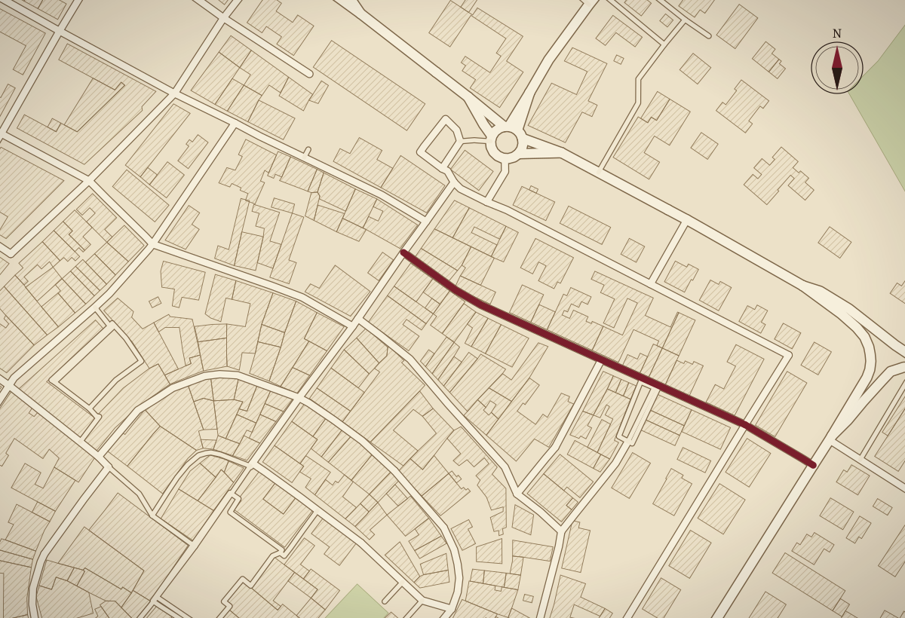

Enoteca diSant'Apollinare
Vino al calice e in bottiglia, crostini, taglieri e polenta, sotto le volte di mattoni di via Sant’Apollinare.
Un bicchiere buono, qualcosa da mangiare, i mattoni di sempre
In fondo a via Sant'Apollinare, dove il centro di Persiceto si fa stretto e silenzioso, c'è una porta sotto un'insegna in ferro. Dentro trovate volte di mattoni, scaffali pieni di bottiglie e tavoli di legno.
La carta dei vini è lunga, e quasi tutto si può bere anche al calice: chiedete allo staff e vi consiglia lui. Da mangiare ci sono i crostini, i taglieri di salumi e formaggi, la polenta e qualche piatto caldo. In enoteca non si paga il coperto.

4,5 su 5
È il mio posto preferito: atmosfera perfetta, personale super gentile.Da una recensione su Google
Otto secoli di mattoni
L'enoteca prende il nome dalla chiesa di Sant'Apollinare, uno degli edifici più antichi del centro di Persiceto. Le carte la ricordano dal Duecento, e la sua navata di mattoni oggi è di nuovo aperta: è la sala grande dove facciamo le serate e il brunch della domenica.
- 1214Un atto notarile del 7 novembre è il primo documento che la ricorda.
- 1324Sant'Apollinare diventa parrocchia.
- 1436Il 16 agosto la chiesa viene ricostruita in mattoni.
- 1630L'abate Maria Antonio de Viani la fa restaurare.
- OggiVino, crostini e musica sotto le stesse volte, tutte le sere.
Date dalla scheda del Catalogo generale dei Beni Culturali sull'oratorio di Sant'Apollinare.



L'ex chiesa di Sant'Apollinare
Una navata di mattoni alta e silenziosa, con le luci appese tra le capriate. La apriamo nel fine settimana, e potete averla tutta per voi.
Le serate
La chiesa è aperta la sera, accanto all'enoteca.
Il brunch
Il pranzo lungo della domenica, sotto le volte.
Cene ed eventi
Compleanni, cene aziendali, feste: affittiamo la chiesa intera.


I crostini sono da sempre straordinari, e la degustazione per due ha superato ogni aspettativa.Marianna, Local Guide
Carta dei vini enorme: si può scegliere la bottiglia, ma anche il calice.Marlene
Buon vino e gustose stuzzicherie: bruschette, zuppe, polenta, dolcetti.Recensione Google
Dove siamo
In centro, a due passi da Corso Italia e da piazza del Popolo.

40017 San Giovanni in Persiceto (BO)